Score distillation methods use pretrained diffusion models as priors for optimizing parameters that are mapped to data by a differentiable forward model, most notably in text-to-3D generation. Yet the distribution they induce over those parameters is not well understood. Observing that existing distillation methods reduce to one of three—Score Distillation Sampling (SDS), Score Distillation via Inversion (SDI), and Variational Score Distillation (VSD)—we extend the particle variational inference view of VSD to the other two. We show that SDS collapses onto the modes of the target, while SDI converges to a contracted version of it, and explain why SDI needs a negative classifier-free guidance scale. Next, we observe that Tweedie's posterior mean equals a single Euler step of the probability-flow ODE (PF-ODE). Replacing this step in SDI with a full reverse solve makes the target a fixed point, but it requires solving two concatenated PF-ODEs. Dropping a Jacobian from the resulting gradient gives Probability-Flow Distillation (PFD), which requires solving only the forward PF-ODE. Experiments on synthetic targets, the CelebA dataset, and text-to-3D generation support our analysis and demonstrate the practical effectiveness of PFD.
Part I: The problem
What are we trying to sample?
We are not after the data, but the parameters that produce it. Let \( \bm{x}_0 = \bm{g}(\bm{\theta}, \bm{\omega}) \), where \( \bm{g} \) is the forward model differentiable in \( \bm{\theta} \), and \( \bm{\omega} \sim \xi \) is the randomness of the forward model. We want a distribution \( \pi \) over \( \bm{\theta} \) whose pushforward matches the data distribution \( p_0 \) learned by a pretrained diffusion model:
\[ \pi^\star \in \arg\min_{\pi}\; D_{\mathrm{KL}}\!\left(\bm{g}_{\#}(\pi \otimes \xi)\,\big\|\,p_0\right). \]In text-to-3D, \( \bm{\theta} \) is a 3D representation, \( \bm{g} \) a renderer and \( \bm{\omega} \) the camera pose; in one-step generation, \( \bm{g}(\bm{\theta},\bm{\omega}) = G_{\bm{\theta}}(\bm{\omega}) \) and \(\pi^\star = \delta_{\bm{\theta^\star}}\) such that \( (G_{\bm\theta^\star})_\#\xi = p_0 \).
How do existing methods do this?
They all move particles along the same kind of update and differ only in one term. They reduce, directly or approximately, to one of three: Score Distillation Sampling (SDS), Score Distillation via Inversion (SDI) and Variational Score Distillation (VSD). Each evolves parameters as
\[ \frac{\mathrm{d}\bm{\theta}}{\mathrm{d}\tau} = -\,\mathbb{E}_{t,\bm{\omega},\bm{\epsilon}}\!\left[\left(\frac{\partial \bm{x}_0}{\partial \bm{\theta}}\right)^{\!\top}\bm{\Delta}(\bm{x}_0, t, \bm{\epsilon})\right], \]where \( \bm{\Delta} \) is the method's gradient estimator and \( \tau \) is optimization time. Viewing this as dynamics on a set of particles \( \{\bm{\theta}_i\}_i \), the induced data distribution is \( q_{0,\tau} = \bm{g}_{\#}(\pi_\tau \otimes \xi) \). VSD was derived so that \( q_{0,\tau} \to p_0 \). For SDS and SDI, the question was never asked. From here on, take \( \bm{g} \) to be the identity, so \( q_{0,\tau} = \pi_\tau \) and work in the variance-exploding form \( \bm{x}_t = \bm{x}_0 + \sigma_t\bm{\epsilon} \).
Part II: Where existing methods end up
In SDS \(q_{0,\tau}\) collapses onto the modes of \( p_0 \)
SDS minimizes the denoising loss over \( \bm{\theta} \) but omits the Jacobian of the noise predictor. The gradient estimator is given by:
\[ \bm{\Delta} = \bm{x}_0 - \hat{\bm{x}}_0(\bm{x}_t), \qquad \hat{\bm{x}}_0(\bm{x}_t) = \bm{x}_t - \sigma_t\bm{\epsilon}_\phi(\bm{x}_t,t) = \mathbb{E}_p[\bm{x}_0 \mid \bm{x}_t], \]the difference between a particle and Tweedie's posterior mean. Taking the expectation over \( \bm{\epsilon} \), each particle evolves as
\[ \frac{\mathrm{d}\bm{x}_0}{\mathrm{d}\tau} = \mathbb{E}_{t,\bm{\epsilon}}\!\left[\sigma_t^2\,\nabla_{\bm{x}}\log p_t(\bm{x}_0 + \sigma_t\bm{\epsilon})\right]. \]Nothing on the right-hand side depends on \( q_{0,\tau} \) and the noise vanished under expectation, so nothing maintains entropy. Every particle climbs to a peak on its own with particles starting in different basins converging to a different local maxima.
Proposition 1 (Isotropic Gaussian target)
Let \( p_0 = \mathcal{N}(\bm{\mu}, \rho^2\bm{I}_d) \) and \( \sigma_t = t \). Then SDS is the linear ODE \[ \frac{\mathrm{d}\bm{x}_0}{\mathrm{d}\tau} = -A(\rho)\,(\bm{x}_0 - \bm{\mu}), \qquad A(\rho) = \mathbb{E}_t\!\left[\frac{t^2}{\rho^2+t^2}\right] = 1 - \rho\arctan\frac{1}{\rho} > 0. \] From \( \mathcal{N}(\bm{m}_0, \nu_0^2\bm{I}_d) \), the particles stay Gaussian with \( \bm{m}_\tau = \bm{\mu} + e^{-A(\rho)\tau}(\bm{m}_0 - \bm{\mu}) \) and \( \nu_\tau^2 = \nu_0^2 e^{-2A(\rho)\tau} \), so \( q_{0,\tau} \to \delta_{\bm{\mu}} \).SDI avoids collapse. Does it reach \( p_0 \)?
SDI keeps the same estimator but replaces the random \( \bm{\epsilon} \) with the noise implied by DDIM inversion. We consider this to be an approximation of the forward PF-ODE, induced by \( \{q_{t,\tau}\}_t \) solved in the \(0\rightarrow t\) direction, which maps \( \bm{x}_0 \) to \( \bm{x}_t \). Writing its flow map as \( \bm{\Phi}^{q_\tau}_{0\to t} \) the particle dynamics are given by:
\[ \frac{\mathrm{d}\bm{x}_0}{\mathrm{d}\tau} = \mathbb{E}_t\!\left[\hat{\bm{x}}_0\!\left(\bm{\Phi}^{q_\tau}_{0\to t}(\bm{x}_0)\right)\right] - \bm{x}_0. \]DDIM inversion approximates \( \bm{\Phi}^{q_\tau}_{0\to t} \) by integrating \( \nabla_{\bm{x}}\log p_t(\cdot\mid\varnothing) \) in place of \( \nabla_{\bm{x}}\log q_{t,\tau} \), which in the text-to-3D setting can be argued as a decent approximation. Unlike SDS, the update now depends on \( q_{0,\tau} \), and that dependence acts as an entropy term: the forward PF-ODE must add a variance fixed by the schedule while the variance it actually adds is proportional to the current variance, so the more concentrated the particles are, the harder it pushes them apart. The posterior mean, however, still contracts, hence, the particles converge to a contracted version of the target.
Proposition 2 (Isotropic Gaussian target)
With \( p_0 = \mathcal{N}(\bm{\mu}, \rho^2\bm{I}_d) \) and \( \sigma_t = t \), the particles stay Gaussian, \( q_{0,\tau} = \mathcal{N}(\bm{m}_\tau, \nu_\tau^2\bm{I}_d) \), with \[ \frac{\mathrm{d}\bm{m}_\tau}{\mathrm{d}\tau} = -A(\rho)\,(\bm{m}_\tau - \bm{\mu}), \qquad \frac{\mathrm{d}\nu_\tau}{\mathrm{d}\tau} = \big(B(\nu_\tau) - 1\big)\,\nu_\tau, \qquad B(\nu) = \frac{\rho^2}{\nu}\,\mathbb{E}_t\!\left[\frac{\sqrt{\nu^2+t^2}}{\rho^2+t^2}\right]. \] \( B(\nu_\star) = 1 \) has a unique, globally attracting solution with \( \nu_\star < \rho \), so \( q_{0,\tau} \to \mathcal{N}(\bm{\mu}, \nu_\star^2\bm{I}_d) \).Why does SDI need a negative CFG scale?
Classifier-free guidance replaces \( p_t(\cdot\mid c) \) with a tilted distribution \( \tilde p_t(\bm{x}\mid c) \propto p_t(\bm{x}\mid c)\,\big(p_t(\bm{x}\mid c)/p_t(\bm{x}\mid\varnothing)\big)^{\gamma-1} \). Since in text-to-3D setting there is no source prompt, SDI inverts under the target prompt itself. Using the approximation we introduced above, \( \nabla\log p_t(\cdot\mid\varnothing) \approx \nabla\log q_{t,\tau} \), the guided score becomes
\[ \nabla_{\bm{x}}\log\tilde p_t(\bm{x}_t\mid c) \approx \nabla_{\bm{x}}\log\!\left[p_t(\bm{x}_t)\left(\frac{p_t(\bm{x}_t)}{q_{t,\tau}(\bm{x}_t)}\right)^{\gamma-1}\right], \]which tilts the sampling trajectory (the PF-ODE induced by \(\{p_t\}_t\) solved in \(t\rightarrow0\) direction, which we call the reverse PF-ODE) from \( q_{t,\tau} \) toward \( p_t \). Inversion integrates the forward PF-ODE, where the tilting must be reversed and hence \( p_t \) and \( q_{t,\tau} \) must swap roles:
\[ \bm{\epsilon}_\phi(\cdot,c) + \gamma\big(\bm{\epsilon}_\phi(\cdot,\varnothing) - \bm{\epsilon}_\phi(\cdot,c)\big) = \bm{\epsilon}_\phi(\cdot,\varnothing) + (1-\gamma)\big(\bm{\epsilon}_\phi(\cdot,c) - \bm{\epsilon}_\phi(\cdot,\varnothing)\big). \]The right hand side is the standard implementation of CFG with guidance \(1-\gamma\). Thus, an effective scale \( \gamma > 1 \) in inversion needs an user-specified scale \( \gamma_{\mathrm{cfg}} = 1-\gamma < 0 \). The following experiment with image editing supports this. Inverting under the target prompt with a positive scale gives unstable edits, while the negative scale restores stability.
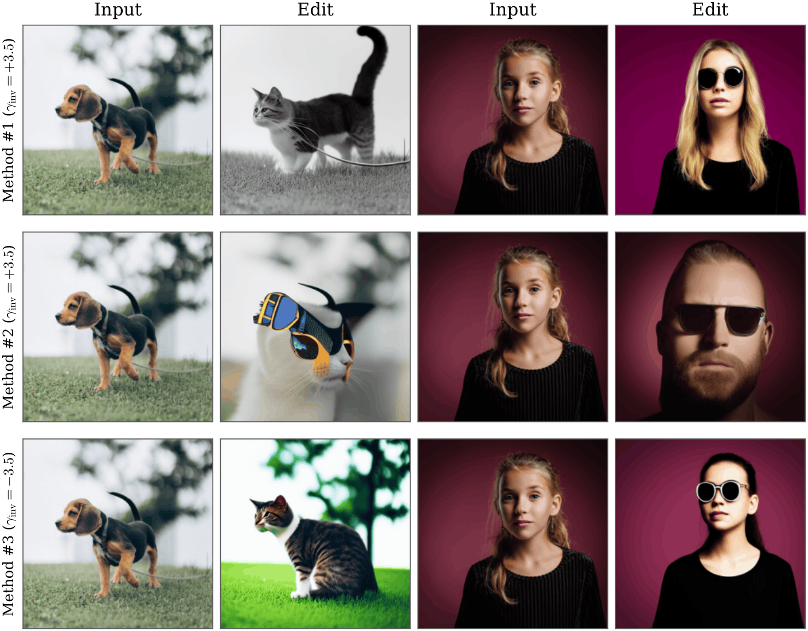
DDIM Inversion with a source prompt at \( +3.5 \) (top), the target prompt at \( +3.5 \) (middle), and the target prompt at \( -3.5 \) (bottom), each followed by DDIM sampling under the target prompt.
Part III: Fixing the bias
What is the posterior mean, really?
It is one Euler step of the reverse PF-ODE, from noise straight to data. In terms of the noise level, the PF-ODE reads \( \mathrm{d}\bm{x}/\mathrm{d}\sigma = \bm{\epsilon}_\phi(\bm{x}, t(\sigma)) \). A single explicit Euler step from \( \sigma_t \) to \( 0 \) gives
\[ \bm{x}_t + (0 - \sigma_t)\,\bm{\epsilon}_\phi(\bm{x}_t, t) = \bm{x}_t - \sigma_t\bm{\epsilon}_\phi(\bm{x}_t, t) = \hat{\bm{x}}_0(\bm{x}_t). \]So SDS and SDI differ only in how they reach \( \bm{x}_t \) (Gaussian noise versus the forward PF-ODE), and both return with the same one-step approximation.
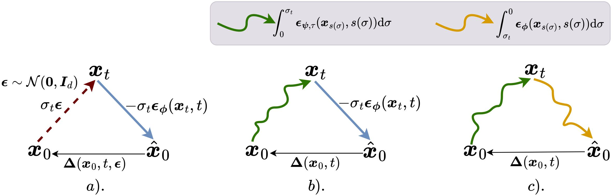
(a) SDS: Gaussian perturbation, then the posterior mean. (b) SDI: forward PF-ODE, then the posterior mean. (c) Dual bridge: forward and reverse PF-ODEs.
Why stop at one step?
We don't have to. A full reverse solve makes \( p_0 \) a fixed point. Replacing the posterior mean with the reverse flow map \( \bm{\Phi}^{p}_{t\to 0} \) gives a dual-bridge estimator,
\[ \bm{\Delta}(\bm{x}_0, t) = \bm{x}_0 - \bm{\Phi}^{p}_{t\to 0}\!\left(\bm{\Phi}^{q_\tau}_{0\to t}(\bm{x}_0)\right). \]When \( q_{0,\tau} = p_0 \), the reverse flow inverts the forward one and \( \bm{\Delta} \) vanishes for every particle. At \( t = 1 \), this is exactly the Dual Diffusion Implicit Bridge from the particle distribution to the target.
Theorem 4
With \( \bm{x}_s = \bm{\Phi}^{q_\tau}_{0\to s}(\bm{x}_0) \) and \( g_s \) the diffusion coefficient, \[ \mathbb{E}_t[\bm{\Delta}(\bm{x}_0, t)] = \int_0^1 \tfrac{1}{2}(1-s)\,g_s^2\,\frac{\partial\bm{\Phi}^{p}_{s\to 0}}{\partial\bm{x}}(\bm{x}_s)\left(\nabla_{\bm{x}}\log q_{s,\tau}(\bm{x}_s) - \nabla_{\bm{x}}\log p_s(\bm{x}_s)\right)\mathrm{d}s. \]The catch: every step needs two concatenated PF-ODE solves, which is \( \mathcal{O}(N^2) \) network evaluations on \( N \) quadrature nodes.
Can we skip the second ODE?
Yes. Drop the Jacobian, and only the forward PF-ODE is left. That is PFD. Without \( \partial\bm{\Phi}^{p}_{s\to0}/\partial\bm{x} \), the gradient in Theorem 4 needs only the forward trajectory. Probability-Flow Distillation evolves particles as
\[ \frac{\mathrm{d}\bm{x}_0}{\mathrm{d}\tau} = \int_0^1 w(t)\left(\nabla_{\bm{x}}\log p_t(\bm{x}_t) - \nabla_{\bm{x}}\log q_{t,\tau}(\bm{x}_t)\right)\mathrm{d}t, \qquad \bm{x}_t = \bm{\Phi}^{q_\tau}_{0\to t}(\bm{x}_0), \]with \( w(t) = \tfrac12(1-t)\,g_t^2 \), though the results hold for any \( w(t) > 0 \). The particle score \( \nabla\log q_{t,\tau} \) comes from an auxiliary model trained online, and the integral is evaluated by quadrature along one forward solve. \( \mathcal{O}(N) \) evaluations per step, like SDI and VSD, and no Monte Carlo variance from sampling \( t \).
Isn't that just VSD?
Not quite. PFD shares the integrand of VSD but uses a different coupling. VSD integrates the same score difference, but at \( \bm{x}_t = \bm{x}_0 + \sigma_t\bm{\epsilon} \), a stochastic coupling. PFD's deterministic coupling makes its gradient deterministic up to \( \bm{\omega} \). VSD is the steepest descent of a time-averaged KL objective. But, if we focus on the KL at the data level instead, PFD wins (atleast in the small-time regime).
Theorem 5 (small-time regime)
With \( \sigma_t = t \) restricted to \( [0,\eta] \) the following hold for an update from common \( q_{0,\tau} \), \[ \left.\frac{\mathrm{d}D_{\mathrm{KL}}(q_{0,\tau}\|p_0)}{\mathrm{d}\tau}\right|_{\mathrm{VSD}} - \left.\frac{\mathrm{d}D_{\mathrm{KL}}(q_{0,\tau}\|p_0)}{\mathrm{d}\tau}\right|_{\mathrm{PFD}} = C_\eta\left(\mathbb{E}_{q_{0,\tau}}\!\left[\big\|\nabla^2\log p_0 - \nabla^2\log q_{0,\tau}\big\|_F^2\right] + \mathcal{O}(\eta^2)\right), \] where \( C_\eta = \tfrac12\int_0^\eta w(t)\,t^2\,\mathrm{d}t > 0 \). PFD decreases the KL at least as fast as VSD for small \( \eta \).But the advantage is not confined to small \( \eta \). For isotropic Gaussian targets with \( \eta = 1 \), PFD, VSD and the dual bridge (DB) all keep the Gaussian family and converge to \( p_0 \), as \( \mathrm{d}\bm{m}_\tau/\mathrm{d}\tau = -A_M(\bm{m}_\tau - \bm{\mu}) \) and \( \mathrm{d}\nu_\tau/\mathrm{d}\tau = (\rho^2 - \nu_\tau^2)\,B_M(\nu_\tau) \), with
\[ A_{\mathrm{PFD}} = A_{\mathrm{VSD}} > A_{\mathrm{DB}}, \qquad B_{\mathrm{PFD}} > B_{\mathrm{VSD}},\, B_{\mathrm{DB}}. \]PFD is the fastest of the three. Suprisingly, dropping the Jacobian makes it converge faster than the dual bridge!
Part IV: Experiments
Does the theory hold up in practice?
Yes, on every target we tried. The following shows the result for a 1D Gaussian, Neal's 2D funnel and a 20D mixture of Gaussians, where in each of them, SDS collapses onto the modes, SDI converges to a contracted target, and DB, VSD and PFD match it. For the Gaussian, the KL divergence decreases fastest for PFD, then VSD, then DB, supporting the propositions.
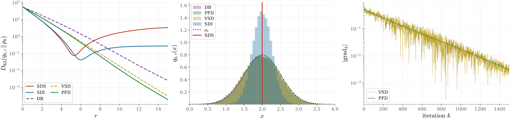
1D Gaussian with \( 10^5 \) particles. (left) \( D_{\mathrm{KL}}(q_{0,\tau}\|p_0) \) over optimization time. (middle) Final distributions; the vertical line marks the SDS point mass. (right) Single-particle gradient magnitude: deterministic for PFD, noisy for VSD.
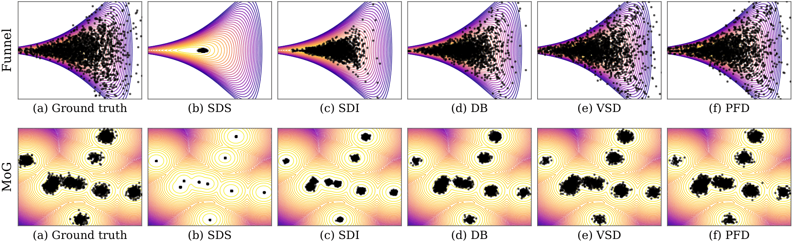
\( 2\cdot10^3 \) particles on the funnel (top) and the 20D mixture (bottom, projected onto two principal components). Columns: ground truth, SDS, SDI, DB, VSD, PFD.
Does it scale to real images?
Yes. On CelebA, PFD and VSD recover the spread of the data; SDS and SDI do not. We train a VE diffusion model on CelebA and use it as the prior for plain image generation, \( \bm{g}(\bm{\theta}) = \bm{\theta} \). Each method optimizes particles initialized from \( \mathcal{N}(\bm{0},\bm{I}) \); FID and CMMD are computed over 10k samples (4 seeds of 2.5k particles).
| Method | FID ↓ | CMMD ↓ | |
|---|---|---|---|
| Reference | Dataset (disjoint 10k) | 2.89 | < 0.001 |
| Euler (50 steps) | 25.54 | 0.377 | |
| Heun (50 steps) | 24.43 | 0.368 | |
| Distillation | SDS | 236.82 | 6.531 |
| SDI | 108.78 | 3.289 | |
| VSD | 16.61 | 0.106 | |
| PFD (Ours) | 16.92 | 0.106 |
Image generation on CelebA.
The samples show why. SDS sends every particle to the same mode, so its images are nearly identical. SDI's are varied but smooth: contracting the spread of \( q_{0,\tau} \) suppresses exactly the high-frequency detail that varies most across faces. Switch between methods below.
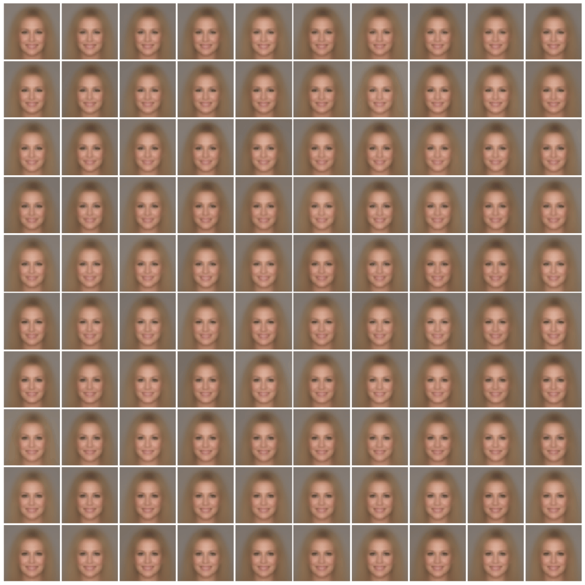
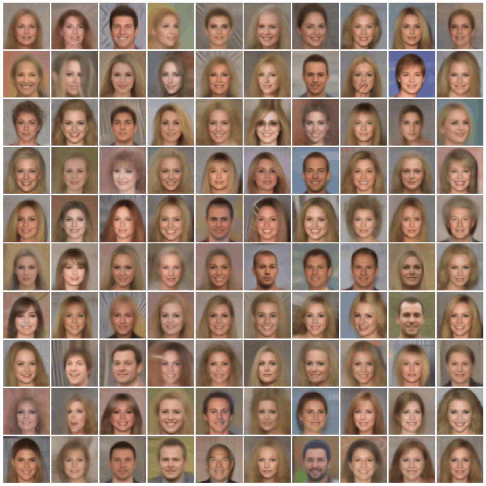
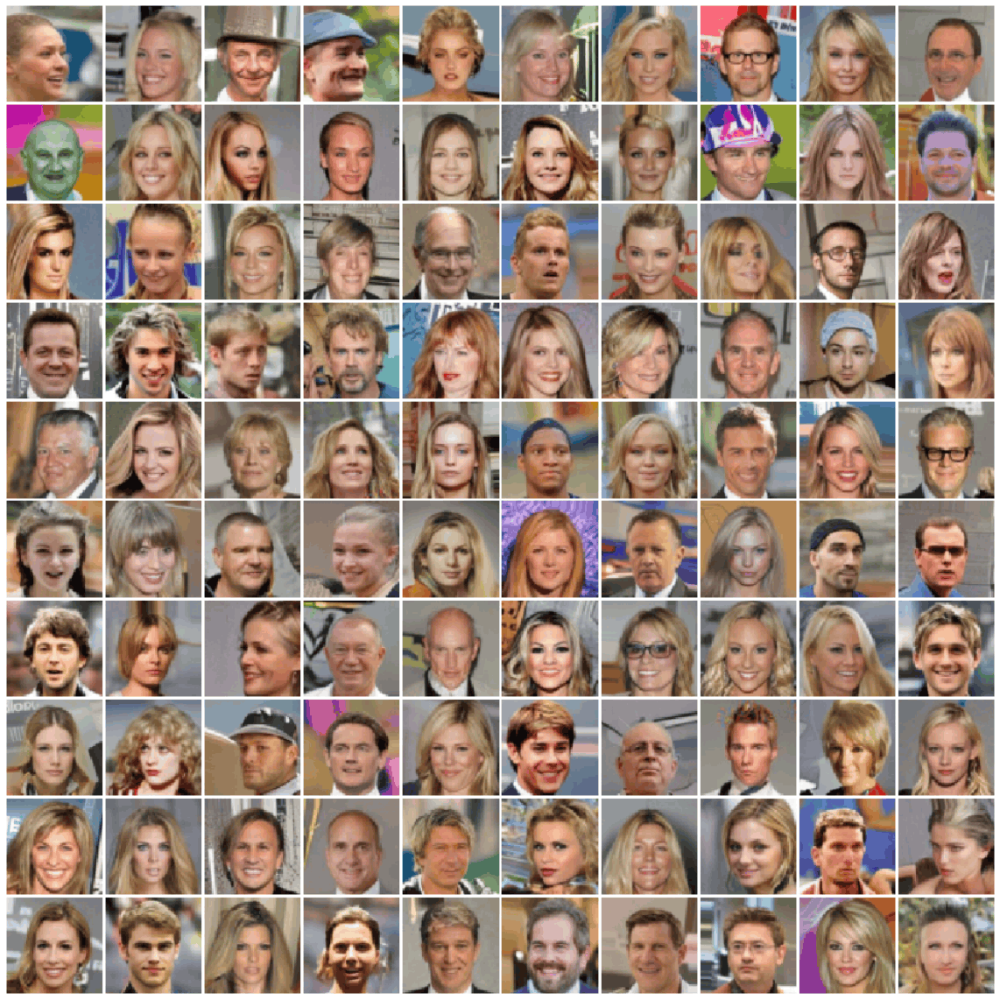
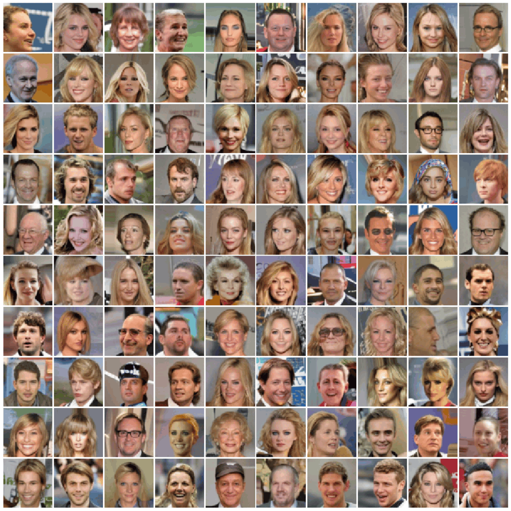
Uncurated samples, \( \bm{x}_0 = \bm{\theta} \) for 100 of the 128 particles optimized per method.
What if \( \bm{g} \) is not the identity?
The target becomes whatever part of \( p_0 \) the range of \( \bm{g} \) can reach, and the same ordering holds. With a deterministic \( \bm{g} \), \( q_{0,\tau} = \bm{g}_{\#}\pi_\tau \), so matching \( p_0 \) means spreading the particles until \( \bm{g}_{\#}\pi_\tau \) is as close to \( p_0 \) as the range of \( \bm{g} \) allows. We test three forward models with the same CelebA prior.
\( \bm{g}(\bm{\theta}) = [\bm{\theta}, \mathrm{flip}(\bm{\theta})] \): the particles hold only the left half, mirrored about the vertical axis, so the target is the symmetric part of \( p_0 \).
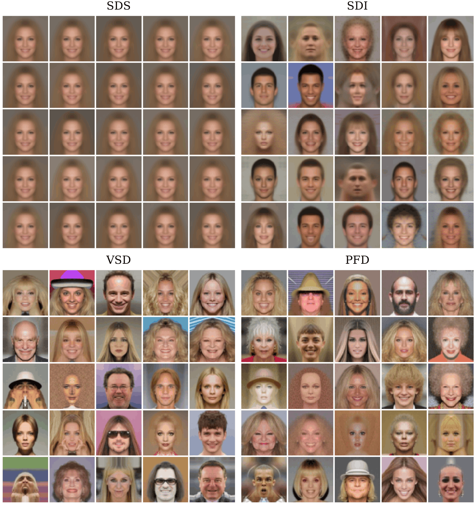
\( \bm{x}_0 = [\bm{\theta}, \mathrm{flip}(\bm{\theta})] \) for 25 of the 128 particles per method.
\( \bm{g}(\bm{\theta}) = \bm{M}\odot\bm{\theta} + (\bm{1}-\bm{M})\odot\bm{x}^{\mathrm{obs}} \) with a fixed binary mask \( \bm{M} \). The range of \( \bm{g} \) is the set of images that agree with \( \bm{x}^{\mathrm{obs}} \) outside the mask, so the target is \( p_0 \) conditioned on the observed pixels. The particles should cover the plausible completions rather than settle on one.
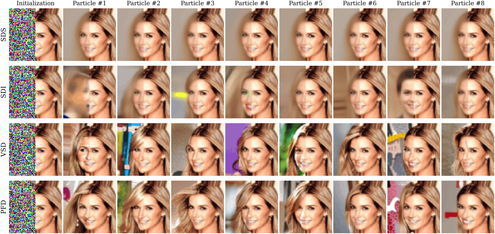
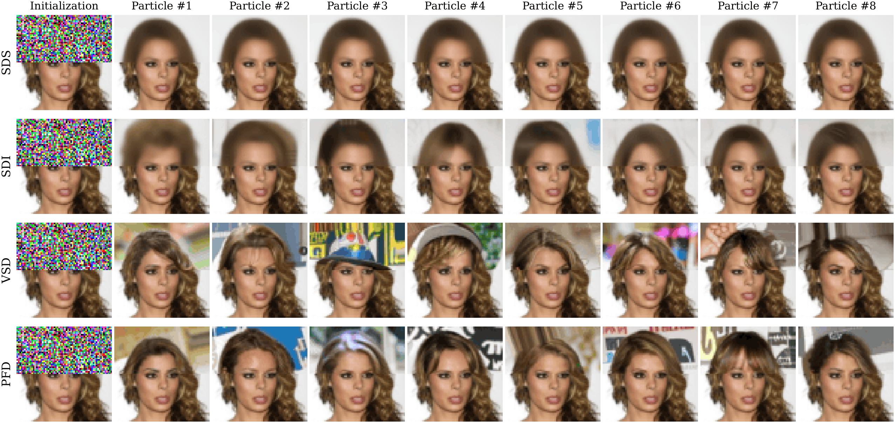
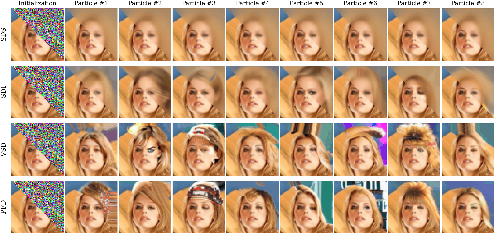
Rows: SDS, SDI, VSD, PFD. The first column is the initialization, with noise in the masked region; the rest are 8 uncurated particles of the 128 per method.
\( \bm{g} \) is the differentiable rasterizer of diffvg, and \( \bm{\theta} \) holds the control points, colors and widths of 256 open Bézier strokes. Here \( \bm{g} \) is far from the identity, and its range is limited to what a set of strokes can draw.
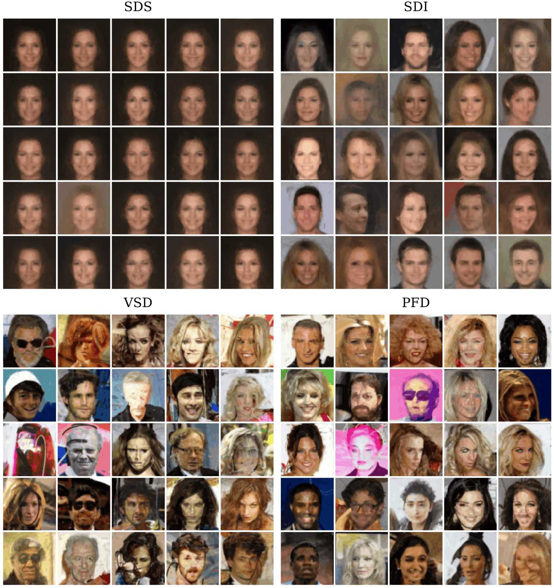
The rasterized render \( \bm{x}_0 = \bm{g}(\bm{\theta}) \) for 25 of the 128 particles per method.
Across all three tasks, SDS converges to near-identical outputs, SDI to varied but smooth ones, and VSD and PFD to diverse, detailed ones.
And text-to-3D?
PFD gives the highest-fidelity renders, with the best ImageReward score. With one 3D representation, \( \pi_\tau = \delta_{\bm{\theta}_\tau} \) and \( q_{0,\tau} \) is the distribution of its renders over camera poses. Matching \( p_0 \) asks every view to look like a sample from the view-conditioned prior, which shows up as finer texture and geometry. All methods share the same per-step cost.
| Method | CLIP R-precision ↑ | ImageReward ↑ | ||
|---|---|---|---|---|
| ViT-L/14 | ViT-B/16 | ViT-B/32 | ||
| SDS | 0.796 | 0.820 | 0.802 | −1.150 |
| SDI | 0.925 | 0.917 | 0.886 | −0.257 |
| VSD | 0.958 | 0.955 | 0.998 | 0.680 |
| PFD (Ours) | 0.969 | 0.955 | 0.998 | 0.891 |
22 prompts, 120 rendered views per asset.
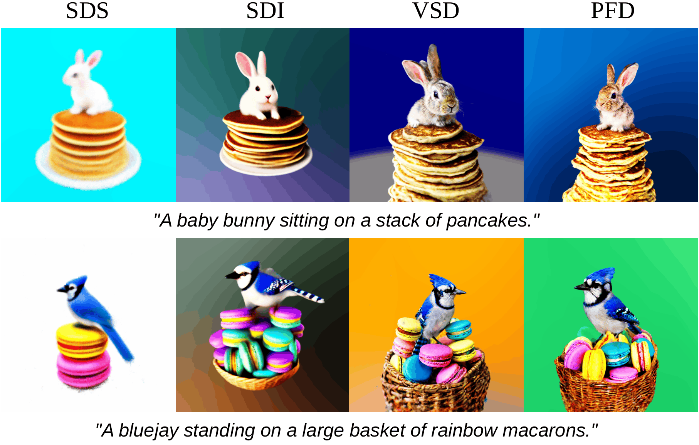
Columns: SDS (oversaturated, oversmoothed), SDI (smooth), VSD, PFD (Ours).
"A DSLR photograph of a beautifully decorated cupcake with sparkling sugar."
"A bagel filled with cream cheese and lox."
"An imperial state crown of England."
"An elephant skull."
"A model of a Tudor-style house."
"A cauldron full of gold coins."
What's next?
PFD's advantage over VSD is proven for general targets only in the small-time regime; extending it beyond that regime remains open. In text-to-3D, threestudio supports only a single representation, which limits us to one particle, so the results show fidelity rather than diversity. The multi-particle setting, which would give diverse as well as high-fidelity assets, is the natural next step. Global artifacts such as the Janus problem also persist, and strong multi-view priors may help alleviate them. We encourage the community to build on this.
@misc{rrohithpfd2026,
title = {Probability-Flow Distillation: Distribution Matching
in Parameter Space},
author = {Rohith Ramanan and A. N. Rajagopalan},
year = {2026},
eprint = {2605.09071},
archivePrefix = {arXiv},
primaryClass = {cs.CV},
url = {https://arxiv.org/abs/2605.09071}
}